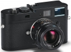

器材库 > 35mm画幅可换镜头数码相机 > M Monochrom

规格总览
产品类型
35mm画幅可换镜头数码相机
发布日期
2012-05-10
厂家推荐价格
7,950.00 （美元）
影像规格
影像传感器
CCD
影像传感器尺寸
36×24mm
总像素
1850万
有效像素
1800万
色彩空间
sRGB hardwired
最大解像度
5212×3472
静态图像格式
JPEG, DNG, DNG+JPEG
静态图像尺寸
5212×3472, 3840×2592, 2592×1728, 1728×1152, 1280×846
静态图像质量
Fine, Standard
画幅比
3:2
镜头和对焦
镜头卡口
Leica M
手动对焦
支持
曝光控制
测光模式
中央重点测光
快门速度
32 ~ 1/4000秒
曝光补偿
±3EV以1/3EV级调整
自动包围曝光
±2（3, 5, 7幅）
连拍
2fps
闪光灯
闪光同步模式
前帘同步, 后帘同步, 慢速同步
取景器/显示屏
取景器
光学取景器
取景放大倍率
0.68倍
LCD类型
彩色TFT LCD
LCD尺寸
2.5英寸
LCD像素
23万
Live View
无
文件输入/输出
存储卡
SD/SDHC
数据接口
USB2.0
电源
电池
锂离子充电电池
机身规格
颜色
黑色
尺寸
139×80×37mm
重量
585g
其它
配件端口
热靴
附件
锂离子充电电池和充电器, USB线, 背带
malcolm2014-03-09 11:564.88 分
操作性 5.00功能性 4.50美观性 5.00趣味性 5.00耐用性 5.00性价比 4.50解像力 5.00色彩还原 5.00
以态2013-09-02 08:584.69 分
操作性 5.00功能性 4.00美观性 4.50趣味性 5.00耐用性 5.00性价比 4.00解像力 5.00色彩还原 5.00
大陶陶2013-08-26 15:104.81 分
操作性 5.00功能性 5.00美观性 5.00趣味性 5.00耐用性 4.50性价比 4.00解像力 5.00色彩还原 5.00
zq10082013-06-24 22:594.81 分
操作性 5.00功能性 4.50美观性 5.00趣味性 4.50耐用性 5.00性价比 4.50解像力 5.00色彩还原 5.00
西子龙2013-01-09 21:045 分
操作性 5.00功能性 5.00美观性 5.00趣味性 5.00耐用性 5.00性价比 5.00解像力 5.00色彩还原 5.00
Feldeinsamkeit2013-01-03 17:544.63 分
操作性 4.50功能性 4.50美观性 5.00趣味性 5.00耐用性 4.50性价比 3.50解像力 5.00色彩还原 5.00
歌台舞榭2012-11-19 01:244.44 分
操作性 4.50功能性 4.00美观性 4.00趣味性 5.00耐用性 4.50性价比 4.00解像力 5.00色彩还原 4.50
产品图 / 样片
Leica M Monochrom
评测 / 相关文章
- 详细内容 （存档）
- 走进黑白世界 徕卡 M-Monochrom试用 （存档）
- ［影像］黑白小夜曲 徕卡MM+七工匠50/1.1 （存档）
- ［资讯］徕卡推出柏林店庆10周年限量版相机 （存档）
- ［影像］真黑白的力量 徕卡M-Monochrom影像 （存档）
- ［资讯］免费更换 徕卡召回部分M系列相机锂电池 （存档）
- ［试用］用徕卡记录生活 （存档）
- ［资讯］徕卡相机新品真机图赏 （存档）
- ［资讯］海外简评：徕卡M Monochrom实拍样片 （存档）
- ［资讯］黑白全幅旁轴徕卡M Monochrom样片欣赏 （存档）